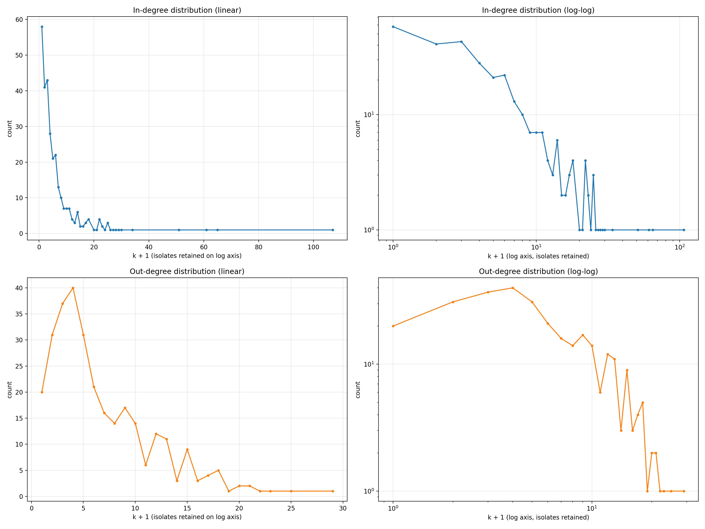
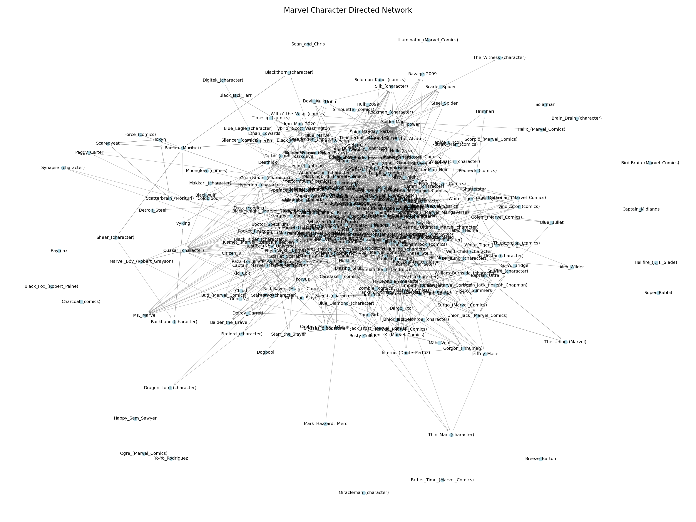

01 / Starting point
Our question
What does the pattern of links between Marvel Wikipedia pages reveal about which characters receive attention, which pages connect outward, and how the network is organized?
This is a question about the structure of the dataset, not a ranking of characters' importance in Marvel canon.
02 / Evidence
The dataset
The frozen course snapshot contains 303 Marvel character pages and 1,783 valid directed links. Each node is a Wikipedia page from the shared Marvel set; each directed edge records a link from one page to another.
The average is the valid edge count divided by the node count. The TSV header is metadata, not a link. This describes the dataset as a whole, not a typical page.
03 / Approach
What we did
We represented the pages and links as a directed graph. For every node, we counted in-degree (links coming in), out-degree (links going out), and total degree. We also plotted the graph to see how the connections are distributed spatially.
Why use two degrees?
In-degree measures how often other pages point to a page. Out-degree measures how many pages a page points to. They answer different questions, so one should not be treated as a substitute for the other.
04 / Shape
Degree distribution
Most pages sit toward the low-degree end of both distributions, while a smaller number extend into a long tail. The linear panels make the concentration near the left edge visible; the log-log panels spread out the tail so the rare high-degree values can be seen.
The figure shows a skewed distribution, but this analysis does not establish that the network follows a power law. The log-log view is a way to inspect scale, not proof of a generative model.

05 / Direction
In-degree vs out-degree
High in-degree means that many pages link to a page. High out-degree means that a page links to many other pages. In this snapshot, the largest incoming count is 106, while the largest outgoing count is 28. That difference tells us that receiving many references and making many references are different roles in this network.
The existing distribution figure is the relevant visualization here: blue marks in-degree and orange marks out-degree. The two panels should be read as complementary views of direction.
06 / Ranking the links
The most connected nodes
These are the top five pages in each direction, taken directly from the existing analysis. Use the buttons to switch between pages that receive the most links and pages that link out the most.
- Spider-Man106
- Hulk64
- Wolverine60
- Doctor Strange50
- Deadpool33
Incoming links: how many pages point to each page.
- Betsy Braddock28
- Cloak and Dagger24
- Adam Warlock22
- Venom21
- She-Hulk20
Outgoing links: how many pages each page points to.
The two top-five lists do not overlap in this output. That is an observation about this directed snapshot; explaining why would require reading the pages or doing further analysis.
07 / The map
Follow one page at a time
Instead of asking you to read 303 nodes at once, this view lets you follow one page through its immediate network. Search for a character or click a node: incoming links turn coral, outgoing links turn green, and unrelated parts of the graph fade into the background.
Scroll or pinch to zoom. Drag the map to pan. Click a neighbor in the panel to move the focus.
Node positions are a readable layout for exploration, not geography. The graph still represents the actual directed links in the dataset.

08 / Reflection
What surprised us
Data-supported candidate: Spider-Man has 106 incoming links, 42 more than Hulk, the next page in the incoming ranking. That is a large gap within this snapshot.
Another clear contrast: the page with the most incoming links is not in the top five outgoing list, and the outgoing leader is not in the top five incoming list.
Whether these patterns genuinely surprised our team is a human interpretation we still need to add.
09 / Takeaway
What we learned
Observation: links are unevenly distributed. A small set of pages receives many more incoming links than most pages, while out-degree values occupy a smaller range.
Interpretation: this network distinguishes pages that are frequently referenced from pages that act as link-rich connectors. The graph gives us a structural description of the Wikipedia snapshot, not a complete account of character popularity or narrative importance.
10 / Boundaries
Limitations
- The snapshot captures Wikipedia links, not every relationship in Marvel stories.
- A link does not tell us why one page references another or whether the relationship is important.
- The graph is directed and unweighted here: repeated context, link placement, and semantic meaning are not represented.
- The spring layout can make dense areas easier to see, but it does not prove clusters, bridges, or causation.
- The degree distributions show a long tail, but the existing analysis does not justify claiming a power-law mechanism.